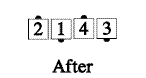
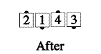

Recycle
From facing couples only: The beaus step forward until they are side-by-side, while doing a U-Turn Back, turning toward each other. Meanwhile, the belles Veer Left and join right hands with the original beaus. Ends in a right-hand wave; the beaus finish as centers of the wave, and the belles finish as ends.
 

Timing: 6
© Copyright 1982, 1986-1988, 1995, 2001-2015. Bill Davis, John Sybalsky, and CALLERLAB Inc., The International Association of Square Dance Callers. Permission to reprint, republish, and create derivative works without royalty is hereby granted, provided this notice appears. Publication on the Internet of derivative works without royalty is hereby granted provided this notice appears. Permission to quote parts or all of this document without royalty is hereby granted, provided this notice is included. Information contained herein shall not be changed nor revised in any derivation or publication.